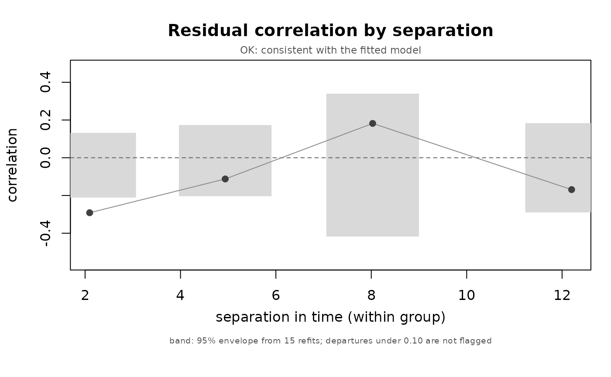

Plot a residual variogram
Usage
ilm_plot_variogram(
res,
colour = "grey25",
fill = "grey85",
alpha = NULL,
size = 1,
main = NULL
)Arguments
- res
The value returned by
ilm_variogram().- colour
Colour for bins that are not flagged.
- fill
Envelope fill.
- alpha
Envelope transparency.
- size
Point scaling.
- main
Title.
Examples
set.seed(1)
d <- data.frame(id = factor(rep(1:20, each = 5)),
t = as.vector(replicate(20, sort(sample(1:20, 5)))),
x = rnorm(100))
d$y <- d$x + rnorm(100)
f <- ilm_model(y ~ x + (1 | id), data = d, family = "gaussian",
verbose = FALSE)
v <- ilm_variogram(f, d$t, d$id, breaks = 4, B = 15, plot = FALSE,
verbose = FALSE)
#> Warning: B = 15 puts the smallest achievable p-value at 0.062, so a FAIL verdict is unreachable. Use B >= 100.
ilm_plot_variogram(v)
